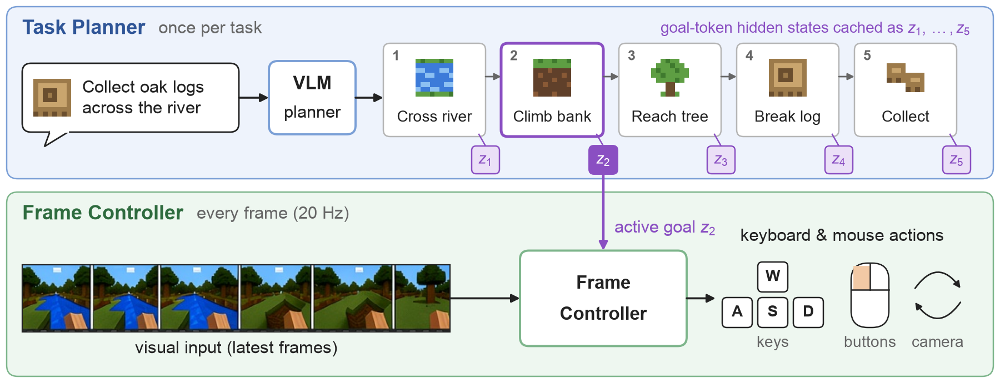
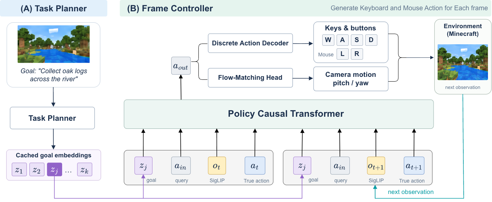

Task-level reasoning and frame-level control operate at different frequencies. Understanding a scene and ordering subgoals needs a large model; executing those subgoals needs a lightweight controller that reacts to every new frame.
TaskFrame connects the two through planner-produced goal representations. A vision-language task planner decomposes a high-level instruction into an ordered sequence of atomic goals, each terminated by a special goal token. The hidden states at these tokens are cached and passed to a lightweight frame controller, which combines the active goal embedding with recent frames to emit discrete keyboard and mouse-button actions and continuous camera motion at every game step. The large planner stays outside the frame-level control loop.
Qwen3.5-9B trained with SFT and dependency-aware GRPO for visually grounded decomposition.
Hidden states of special goal tokens give continuous goal embeddings, cached and reused across control steps.
Causal Transformer with a hybrid head: autoregressive keys & buttons + flow-matching camera.

Multi-rate inference: the planner decodes the plan once; the controller acts at every frame using only the cached embedding of the active goal.
Schematic animation of Sec. 3.4, not a recorded rollout. Key presses are illustrative. As in the paper, switching to the next atomic goal is supplied by an external execution protocol.

Starting from Qwen3.5-9B, the planner is trained for visually grounded instruction decomposition on the hierarchical annotations of GameHorizon Suite: first with supervised fine-tuning, then refined with dependency-aware GRPO that rewards step-count agreement and necessary precedence relations separately.
The controller is pretrained on atomic-segment gameplay with native keyboard-and-mouse actions. A frozen, generic vision-language model (Qwen3.5-9B) encodes the frame at the start of each window together with its atomic instruction, terminated by the same goal token, to produce the goal embedding.
The generic encoder is replaced with the GRPO-trained planner, augmented with LoRA adapters in every Transformer block. The action objective updates all controller parameters and the adapters, while base planner weights stay frozen. The adapted planner is the single planner used at inference, for both decomposition and goal embeddings.
A reference plan records one execution sequence, but several orderings may be valid. Generated steps are aligned to reference steps by Hungarian assignment, and the reward separates dependency satisfaction S_{\mathrm{dep}} over annotated must-precede pairs from conventional-order agreement S_{\mathrm{conv}} over the remaining pairs:
The 0.8/0.2 split is derived from the dependency annotation statistics of GameHorizon Suite.
Reorder or drop steps of a toy plan and watch the reward above respond. Arrows mark the illustrative must-precede dependencies D.
Each atomic goal is terminated by a special goal token \tau. The hidden state at the j-th goal token summarizes the goal in the context of the observation, the instruction, and the preceding steps:
The decoded language supports supervision and evaluation, while the controller consumes only z_j.
The action-output token is decoded by two heads: a small autoregressive decoder for discrete keys and mouse buttons, and a lightweight flow-matching head for continuous camera motion (yaw and pitch in degrees), which avoids discretizing small corrections and can represent several plausible directions.
Success rate (%) on atomic tasks over 3 evaluation seeds (12 episodes per kill task, 6 per mining task, per seed). Protocol of JARVIS-VLA and MCU in MineStudio.
SSF1 is evaluated without a supplied step count on 2.1K held-out plans; Task2 of GameHorizon Suite measures step ordering on 250 questions. General-purpose models are evaluated zero-shot.
Kill success (%) when only the supplied goal is changed; 48 episodes per task in each of three seeds.
Offline action prediction on held-out gameplay with high-level goals.
Camera MAE (°) on held-out gameplay; same data and schedule, only the camera head differs.
Recorded first-person episodes from closed-loop Minecraft evaluation. Combat clips are successful TaskFrame rollouts: the controller turns, closes in, and keeps attacking until the target is gone. Oak is a successful mining episode from the aligned controller.
@article{wang2026taskframe,
title = {TaskFrame: Connecting Task-Level Planning with Frame-Level Control for Game Agents},
author = {Wang, Guangzhi and Pu, Junfu and Wang, Yiran and Yin, Xingyilang and Chen, Honghao and
Cheng, Cheng and Li, Lingen and Zhou, Yinan and Wu, Jiarui and Jiang, Yinuo and
Jin, Hongbo and Cun, Xiaodong and Shan, Ying},
journal = {arXiv preprint},
year = {2026}
}